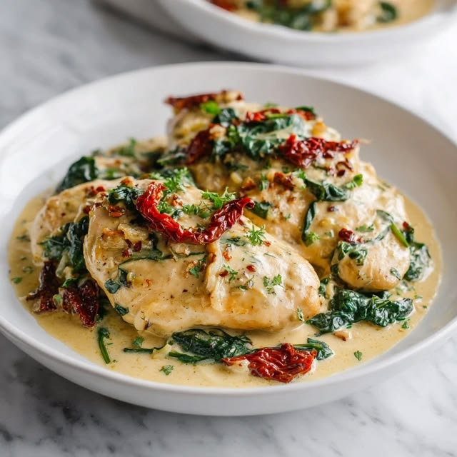
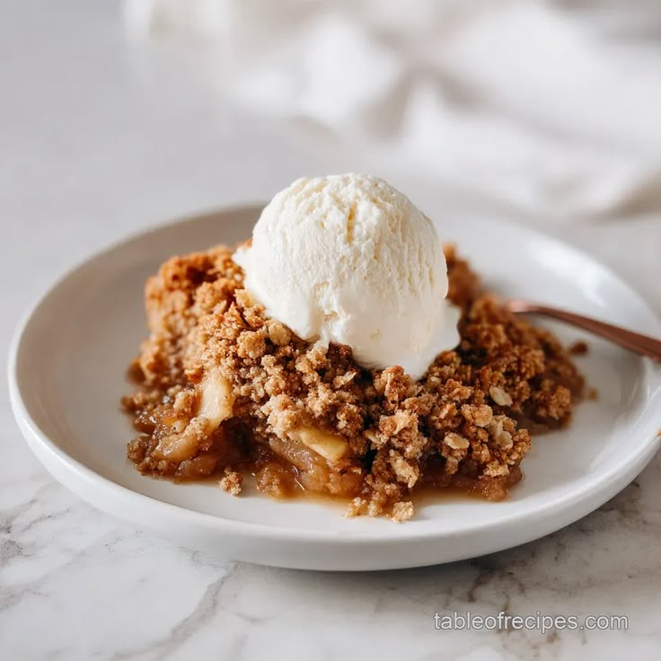

Creamy Tuscan Garlic Chicken
Tender pan-seared chicken breasts simmered gently in a rich garlic cream sauce filled with sun-dried tomatoes and fresh baby spinach. A timeless, savory dinner classic that pairs beautifully with pasta or crusty bread.
View Recipe Card →
Classic Warm Apple Crisp
Sweet, spiced honeycrisp apples baked until perfectly tender, topped with a generous, golden-brown brown sugar and cinnamon oat crumble. Serve it warm straight from the oven with a scoop of vanilla bean ice cream.
Start Baking →